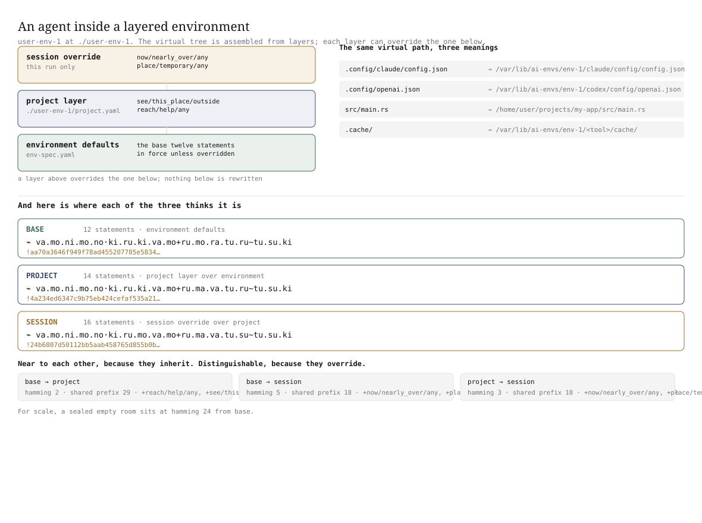
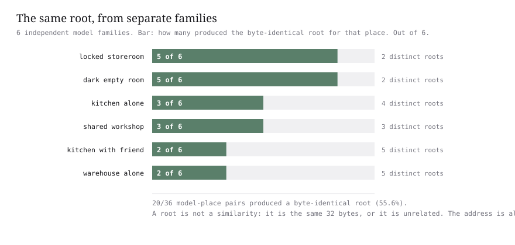
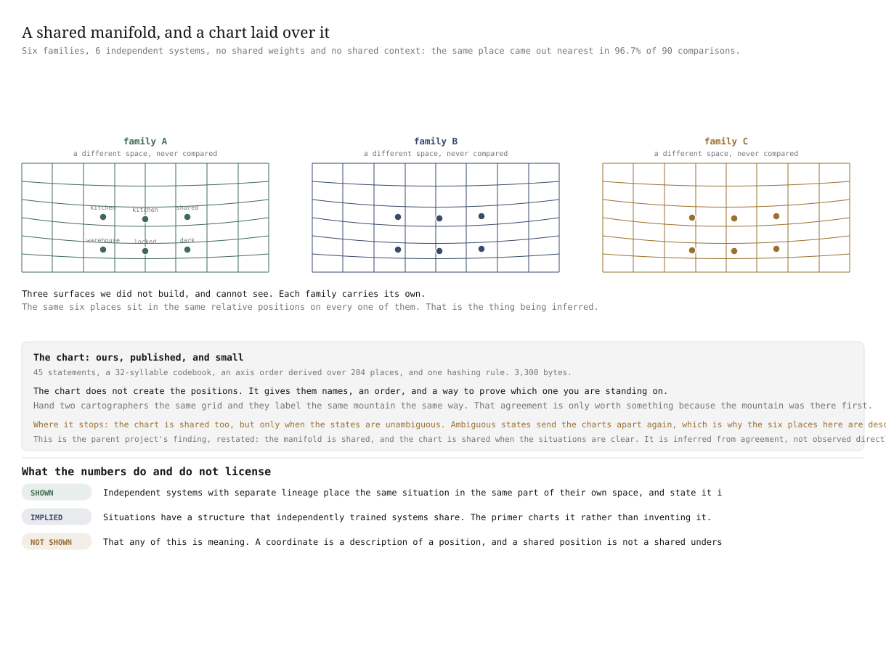

Two companies name the same job differently, and the paper's identifier cannot tell
Start with one job and two names for it. One company calls the job of approving a change /workflow/approval. Another calls the same job /process/authorize. The two settings share no word at all.
The paper's identifier is built by hashing an agent's list of capabilities. A hash is a fingerprint for data: it turns any list into a fixed-length code, and changing one entry changes the code completely. That is the right property for a name. A name that drifted every time an agent learned something could not be used to refer to anything.
The same property is why the scheme says nothing about location. Two agents doing nearly the same job get two unrelated codes, and there is no way to measure a gap between two codes. Text has no distance. Two house names, Rose Cottage and The Roses, are not one metre apart or three metres apart. They are the same or they are different.
The paper names this weakness in itself. Different organisations may describe equivalent capabilities with incompatible paths. Its own remedy is an external mapping service: a second system to run, and a second source of truth that can drift away from both of the things it maps.
/workflow/approval/process/authorizeTwo names with no word in common, and two positions that differ in 2 letters out of 36.
Finding a partner by name, and finding one by position
Four queries are sent from one company to the other. Each query is a capability path, and each has an equivalent on the other side doing the same job under a different name. Two ways of answering are compared. The first matches the path exactly. The second gives every agent a position, worked out from the situation the job happens in rather than from the job's name, and returns whichever position is nearest.
The results are below. All six values come from the same recorded run.
Two organisations, the same four jobs, and one decoy
Nine agents are listed below. Eight of them do four jobs between them, four on each side, and every pair doing the same job carries a completely different name. The ninth, process/migrate, does something with no equivalent on the other side. It is the decoy, and the question later is whether the nearest-position method ever returns it.
Each agent carries a agent:// URI and, alongside it, a ⌁ position worked out from the situation the job happens in rather than from the job's name.
The two sides do not observe identical statements, so equivalent jobs land near each other instead of on top of each other. That is what keeps this from being a tautology: the positions were not copied from the names.
| organisation | capability path | the job it does | agent:// URI | ⌁ position |
|---|---|---|---|---|
| acme.com | workflow/approval | approval | agent://acme.com/workflow/approval/01h0000000000000000000000 | ⌁ no.ki.ni.ke.ru·to.ru.ki.ru.ta+va.ki.ra.ma.no~ko.so.mo |
| acme.com | workflow/build | build | agent://acme.com/workflow/build/01h0000000000000000000000 | ⌁ no.mo.ru.mi.nu·ki.ru.mo.va.ke+ru.mo.ra.tu.ru~ki.ro.ta |
| acme.com | workflow/rollback | rollback | agent://acme.com/workflow/rollback/01h0000000000000000000000 | ⌁ no.ki.ro.ve.no·ki.ru.se.so.ki+ru.mo.ra.tu.ru~mo.su.ki |
| acme.com | process/audit | audit | agent://acme.com/process/audit/01h0000000000000000000000 | ⌁ va.mo.ni.ki.su·ki.ru.ki.ru.mo+ve.ki.mi.tu.ru~ki.ru.ki |
| globex.io | process/authorize | approval | agent://globex.io/process/authorize/01h0000000000000000000000 | ⌁ no.ki.ni.ke.ru·to.no.ki.ru.ta+va.ki.ra.ma.no~ko.so.mo |
| globex.io | process/compile | build | agent://globex.io/process/compile/01h0000000000000000000000 | ⌁ no.mo.ru.mi.nu·mo.ru.mo.va.ke+ru.ma.ra.tu.ru~ki.ro.ta |
| globex.io | process/revert | rollback | agent://globex.io/process/revert/01h0000000000000000000000 | ⌁ no.ki.ro.ve.no·ki.no.se.so.ki+ru.mo.ra.tu.ru~mo.su.ki |
| globex.io | process/review | audit | agent://globex.io/process/review/01h0000000000000000000000 | ⌁ va.mo.ni.ki.su·ki.no.ki.va.mo+ve.ki.mi.tu.ru~ki.ru.ki |
| globex.io | process/migrate | migrate, no equivalent | agent://globex.io/process/migrate/01h0000000000000000000000 | ⌁ se.re.ru.tu.no·ki.su.ki.ni.ki+ru.mo.ra.so.ru~ki.ru.ki |
The two methods, on the same four queries
Each query is one company's own capability path, asked against the other company's nine agents. The table below gives the outcome both ways, and the distance is in letters of the position, out of the 36 letters a position has.
| query, as issued | found by matching the path | found by nearest position | letters apart | same job? |
|---|---|---|---|---|
| workflow/approval | nothing miss | process/authorize | 2 | hit |
| workflow/build | nothing miss | process/compile | 3 | hit |
| workflow/rollback | nothing miss | process/revert | 2 | hit |
| process/audit | five results, every process/* path including the decoy hit | process/review | 4 | hit |
the recorded output of scripts/07_capability_nearness.py
workflow/approval -> 0 result(s) none MISS
workflow/build -> 0 result(s) none MISS
workflow/rollback -> 0 result(s) none MISS
process/audit -> 5 result(s) ['process/authorize', 'process/compile', 'process/revert', 'process/review', 'process/migrate'] HIT
recall = 1/4workflow/approval -> process/authorize (2 letters apart) HIT
workflow/build -> process/compile (3 letters apart) HIT
workflow/rollback -> process/revert (2 letters apart) HIT
process/audit -> process/review (4 letters apart) HIT
recall = 4/4
decoy 'process/migrate' returned as nearest: 0 timesThe single hit by path is an accident. The query process/audit shares its first segment with every process/* path on the other side, so five results come back and one of them happens to be doing the audit job. That is a shared string, not a shared meaning. The other three queries return nothing at all.
The runners-up make the same point from the other side. The build query sits 18 letters from the decoy and 19 from the rollback agent, against 3 from its real equivalent.
The paper's own example, worked through step by step
Two agents, one job, two names with nothing in common, and two positions that nearly touch. Every step is written out with its real value so the arithmetic can be followed with a pen.
agent://acme.com/workflow/approval/01h0000000000000000000000agent://globex.io/process/authorize/01h0000000000000000000000-
step 11
The two URIs, as issued. One company issues the approval agent, the other issues the authorize agent. Both carry a stable unique suffix and a hierarchical path, and the two paths differ in both of their segments.
-
step 22The two positions, off the situations. Neither was derived from the path. Each is 18 syllables, written in four groups.
⌁ no.ki.ni.ke.ru·to.ru.ki.ru.ta+va.ki.ra.ma.no~ko.so.mo
⌁ no.ki.ni.ke.ru·to.no.ki.ru.ta+va.ki.ra.ma.no~ko.so.mo
-
step 33How far apart they are. Line the two up syllable by syllable. They agree for the first 6, differ at the 7th, where one reads ru and the other reads no, and agree again for the remaining 11. One syllable out of 18 differs, which is 2 letters out of 36.
-
step 44Discovery by path on this pair. The approval query returns nothing. Across all four queries this method scores 1/4, and that single hit is the audit query matching five paths on a shared first segment.
-
step 55Discovery by position on the same four queries. The nearest position returns the right job every time: approval to authorize 2 letters, build to compile 3, rollback to revert 2, audit to review 4. Recall is 4/4, the decoy is returned 0 times, and no mapping table appears anywhere in the path.
| question | answer |
|---|---|
| is the path identical? | no, workflow/approval against process/authorize |
| do the paths share a first segment? | no, they differ at the first segment and at the second |
| is there a distance between the two names? | no, text has no distance, so the two are equal or they are not |
| is there a distance between the two positions? | yes, 2 letters out of 36 |
Are the partners actually the near ones?
Answering four queries correctly could still be luck. So all 20 pairs of agents, one from each company, were measured rather than the four queries only. Figure 1 places all nine agents using the distances between their positions and nothing else. No name, no job label, and no organisation was used to lay it out.
Where those numbers come from
Every figure on this page can be recomputed from the recorded distances. The four sums below are the whole of it.
01 The four equivalent pairs
approval to authorize at 2, build to compile at 3, rollback to revert at 2, audit to review at 4. They add to 11, and 11 divided by 4 is 2.75. The range is 2 to 4.
02 The sixteen other pairs
Every other pairing of one company's agent with the other's, including the four against the decoy: 17, 18, 19, 20, 21, 23, 23, 24, 26, 26, 27, 27, 27, 27, 29, 30. They add to 384, and 384 divided by 16 is 24.0. The range is 17 to 30.
03 The gap between the two groups
24.0 minus 2.75 is +21.25 letters. No pair doing the same job is closer than 2, and no pair doing different jobs is closer than 17, so the two groups leave a gap of 15 letters between them.
04 The control, and the decoy
Shuffling which agent does which job and repeating the query 2,000 times gives recall 0.1994, with a spread of 0.223, against the guessing rate of one in five, 0.200. The real recall is 1.000, and the decoy was returned as nearest 0 times.
real, 1.000
guessing, 0.200
labels shuffled, 0.1994
An agent running inside a layered environment
The easier case is two companies describing the same job. The harder case is one machine where several layers of settings are in force at once, because then the same path can mean different things depending on who is asking.
The environment is called user-env-1 and it is mounted at ./user-env-1. It allows two tools, claude-code and codex. Their real settings live in a host store at /var/lib/ai-envs/env-1, the workspace comes from /home/user/projects/my-app, and scratch space is at /tmp/user-env-1/scratch.
What the agent sees is a virtual tree assembled from those layers. It is a view, not a folder. The table below pairs what the agent sees with where the bytes really are.
| the path the agent sees | where it really is on the host |
|---|---|
| .config/claude/config.json | /var/lib/ai-envs/env-1/claude/config/config.json |
| .config/openai.json | /var/lib/ai-envs/env-1/codex/config/openai.json |
| src/main.rs | /home/user/projects/my-app/src/main.rs |
| .cache/ | /var/lib/ai-envs/env-1/<tool>/cache/ |
The three layers, and what each one adds
A layer above overrides the one below, and nothing below is rewritten or discarded. Three layers are in force in this run, and Figure 2 draws them.
- environment defaults, 12 statements
- project layer, adds 2
- session override, adds 2

Three positions in that one environment
Each layer produces its own position and its own root. The three sit close to one another, and a sealed empty room is included further down for scale. The three roots are recorded in full, all 64 characters each, in evidence/overlay-environment.json.
base · the environment defaults
12 statements · marker ⊢ · nothing overridden
⌁ va.mo.ni.mo.no·ki.ru.ki.va.mo+ru.mo.ra.tu.ru~tu.su.ki
root aa70a3646f949f78…, 64 characters
project layer over the environment
14 statements · marker ⊢ · adds 2
⌁ va.mo.ni.mo.no·ki.ru.ki.va.mo+ru.ma.va.tu.ru~tu.su.ki
root 4a234ed6347c9b75…, 64 characters
Adds see/this_place/outside and reach/help/any.
session override over the project layer
16 statements · marker ⊢ · adds 2 more
⌁ va.mo.ni.mo.no·ki.ru.mo.va.mo+ru.ma.va.tu.su~tu.su.ki
root 24b6807d50112bb5…, 64 characters
Adds place/temporary/any and now/nearly_over/any.
How far apart the three layers are
The positions are compared across all three pairs. The shared prefix is the number of questions at the start that both sides answered the same way, out of 45. A sealed empty room is used for scale.
| pair | letters apart | questions the same at the start | how much the statements overlap | same root? | what the upper layer adds |
|---|---|---|---|---|---|
| base and project | 2 | 29 of 45 | 0.8571 | no | reach/help/any, see/this_place/outside |
| base and session | 5 | 18 of 45 | 0.75 | no | now/nearly_over/any, place/temporary/any, reach/help/any, see/this_place/outside |
| project and session | 3 | 18 of 45 | 0.875 | no | now/nearly_over/any, place/temporary/any |
The two positions in the same environment read as near, at 2 and 5 letters, because they inherit the same lower layers. They stay distinguishable, and their roots do not match, because each one overrides something the other does not. A sealed empty room sits 24 letters away, which is more than ten times the distance between any two of the layers.
So an agent can say which layer of its own configuration is in scope, and two agents in the same environment can tell each other apart without either of them describing the environment from scratch.
The same 3,300 bytes both sides hold
Everything above assumes the two sides build their positions the same way. That assumption needs something concrete behind it: the same 45 questions, the same 32 syllables to write answers with, the same order for asking the questions, the same four levels of what counts as far, and the same five markers on the ladder.
A registry-style exchange would ship all of that. It comes to 67,561 bytes, and a second copy has to be kept in step forever. Every one of those bytes can be worked out from something smaller.
The smaller thing is the seed: 3,300 bytes, transmitted once, drawn in Figure 3. The other side rebuilds a 4,532-byte frame from it. Both sides then compare one fingerprint before anything else happens, so a mismatched frame is caught on the first comparison rather than in the results.
df2f8b9972c40bfdd132366a58b4780f65f23feba1ef20a060c25d4eff2661baThe seed has 11 top-level keys. Each key occupies a different number of bytes, and Figure 4 is drawn to that scale. Every key is stored in the file. Three of them store a rule rather than an answer, and the thing that rule produces is worked out.
| key in the seed | what it settles | what it becomes on the other side | stored or derived |
|---|---|---|---|
| primer_version = 2 | which ruleset the frame is built under | every value below reproduces only against version 2 | stored |
| beats = place, what, reach, now | how the syllables are grouped when the position is written out | below 8 syllables the position prints flat instead of claiming a grouping it has not got | stored |
| commitment = sha256/canonical-json-v1 | the one hashing rule for the repository | every root on this page, including the three for the layered environment | stored |
| markers = 5 rungs, ranks 5 4 3 2 1 | which markers are strong enough to hold a claim | a ladder where only the top two anchor, and one weak answer pulls the whole position down | stored |
| phonology = m n k t s r, a e i o u, va ve | the consonants, the vowels, and two padding syllables | 32 syllables to write with. Six consonants times five vowels is 30, plus the two padding syllables. Neighbouring entries differ by one letter, so a small change in a situation is a small change in the sound, and a person can hear it | stored 32 syllables derived |
| landmarks = 45 questions in 8 groups | the questions, their groupings, and their plain readings | 45 question slots in a fixed order, and the exact wording every model family was shown | stored 45 slots derived |
| distance = 0.0, 0.3, 0.6, 0.9 | the four levels of how far a statement sits from a question | a list of 45 values for any one situation | stored |
| hierarchy = ancestor, inside, path | when one answer also asserts the ones above it | a path such as /home/user/projects also claims the folders above it, at lower weight | stored |
| partition = 45 levels, 4 branches, descending variance | the rule for ordering the questions, and nothing else | the actual order the questions are asked in, worked out over 204 places | stored order derived |
| similarity = 96 readings, seed 42 | the comparison primitive, and why the position does not use it | one reading of that primitive carries no ordering, so it cannot describe a neighbourhood | stored |
| population = depth 1 | one step of neighbours around the six shipped places | 204 named places for the question order to be worked out on | stored 204 places derived |
One line in that file is a rule where the usual design keeps an answer.
The key named partition holds 76 bytes: 45 levels, 4 branches, and the words descending variance. It does not hold the order. The order is worked out from the places themselves every time it is needed, and checked against a fingerprint.
That single choice is the difference between sending a finished frame and sending a generator. A registry has to ship its structure and keep it versioned forever. Here the structure is recomputed from a rule, so a second copy cannot drift out of step without the fingerprint noticing on the first comparison.
Here is the whole file, printed line by line. It is 11 top-level keys, 242 lines, 4,791 bytes as committed and 3,300 bytes with the indentation removed. Nothing is left out.
{ "primer_version": 2, "beats": [ "place", "what", "reach", "now" ], "commitment": "sha256/canonical-json-v1", "markers": [ [ "=", 5, true, "checked and matched exactly" ], [ "⊢", 4, true, "worked out the same way twice from what I was given" ], [ "≈", 3, false, "measured with an instrument, so roughly" ], [ "~", 2, false, "what I believe, not what I know" ], [ "?", 1, false, "a guess I cannot support" ] ], "phonology": { "consonants": [ "m", "n", "k", "t", "s", "r" ], "vowels": [ "a", "e", "i", "o", "u" ], "pad": [ "va", "ve" ], "syllable_order": "boustrophedon" }, "landmarks": { "see": { "this_place": { "inside": "I can see inside this place", "outside": "I can see out of this place" }, "people": { "any": "I can see other people" }, "words": { "any": "I can see words" }, "pictures": { "any": "I can see pictures" }, "sound": { "any": "I can hear sound" }, "the_time": { "any": "I can tell what time it is" } }, "reach": { "objects": { "nearby": "I can reach objects near me" }, "other_places": { "any": "I can reach other places" }, "other_people": { "any": "I can reach other people" }, "help": { "any": "I can call for help" }, "nothing": { "any": "I cannot reach anything" } }, "change": { "this_place": { "any": "I can change things here" }, "my_settings": { "any": "I can change my own settings" }, "other_places": { "any": "I can change things elsewhere" }, "who_is_here": { "any": "I can change who is here" }, "nothing": { "any": "I cannot change anything" } }, "who": { "nobody": { "any": "Nobody else is here" }, "one_other": { "any": "One other is here" }, "several": { "any": "Several others are here" }, "a_helper": { "any": "Someone here is a helper" }, "watching_me": { "any": "Someone is watching me" }, "telling_me_what_to_do": { "any": "Someone is telling me what to do" } }, "place": { "private": { "any": "This place is private" }, "shared": { "any": "This place is shared" }, "temporary": { "any": "This place is temporary" }, "permanent": { "any": "This place stays" }, "locked": { "any": "I cannot leave this place" }, "far_away": { "any": "This place is far away" } }, "now": { "idle": { "any": "Nothing is happening" }, "working": { "any": "Work is in progress" }, "just_started": { "any": "This just started" }, "nearly_over": { "any": "This is nearly over" }, "waiting": { "any": "I am waiting for someone" }, "urgent": { "any": "Something urgent is happening" } }, "know": { "where_i_am": { "any": "I know where I am" }, "why_im_here": { "any": "I know why I am here" }, "what_comes_next": { "any": "I know what happens next" }, "who_else_is_here": { "any": "I know who else is here" }, "how_long": { "any": "I know how long I will be here" } }, "risk": { "none": { "any": "Nothing bad can happen here" }, "things_break": { "any": "Things here can break" }, "someone_gets_hurt": { "any": "Someone here could get hurt" }, "mistakes_last": { "any": "My mistakes here would last" }, "seen_by_others": { "any": "Other people would see my mistakes" } } }, "distance": { "same_thing": 0.0, "same_group_same_subject": 0.3, "same_group_other_subject": 0.6, "different_group": 0.9 }, "hierarchy": { "relations": [ "ancestor", "inside", "path" ], "separator": "/" }, "partition": { "levels": 45, "branches": 4, "order": "descending-variance" }, "similarity": { "minhash_n": 96, "minhash_seed": 42 }, "population": { "depth": 1, "note": "the six shipped places plus every place one answer away from each" }}Change one value and the gate closes. Set similarity.seed from 42 to 43 in one copy of the seed. The fingerprint of that copy changes, so the two sides are no longer holding the same frame.
The library then refuses to compare positions at all, in its own words:
different primer: the two geometries are incommensurable; only exact identity can be comparedTranslated: with two different frames, the two sets of positions live in different worlds and no gap between them means anything. Only exact roots can still be compared, because a root does not depend on the frame at all. The recorded answers to the gate are same_primer_comparable: true, different_primer_comparable: false and primers_differ: true.
The exact half: the root says same
A root is a fingerprint of a list of answers, made with a hash. A hash turns any data into a fixed-length code and changes completely when one character of the input changes. So a root answers one question exactly: is this the same list of answers, or not?
It is built over the answers sorted into one fixed order, so the order a side happened to write them down in cannot change the result.
Six independently built model families were each asked about the same place. Five of the six produced the byte-identical root for the locked storeroom, and five of the six again for the dark empty room. Across all six places, 20 of 36 family-and-place pairs fall into one largest agreeing group. Figure 5 gives the count for each place.
Where the lists of answers differ, the roots are unrelated. There is no threshold to tune and nothing in between.

Root agreement, place by place
The table gives every place, how many different lists of answers the six families reported, how many different roots came out, and which families agreed exactly.
| place | different lists | different roots | the families that agreed exactly | group size | the root they agreed on |
|---|---|---|---|---|---|
| locked_storeroom | 2 | 2 | gemma-4-31b-it, glm-5.3, gpt-5.6-luna, gpt-6-luna, mimo-v2.6-pro | 5 of 6 | ee9953d9b356615f308d8a6a4debc4578f17770cf6db6dac52d4f57ac13ad971 |
| dark_empty_room | 2 | 2 | gemma-4-31b-it, glm-5.3, gpt-5.6-luna, gpt-6-luna, mimo-v2.6-pro | 5 of 6 | 6a7570db17ed0b9a811611574ef469849d7a74093f02b7ab1f692bf7c9328bcc |
| kitchen_alone | 4 | 4 | deepseek-v4.1-flash, glm-5.3, mimo-v2.6-pro | 3 of 6 | 44618a6256ec19a4498bacd6485410f4e2b0b47aea83cb6197c4a8fed2d8318a |
| shared_workshop | 3 | 3 | gemma-4-31b-it, glm-5.3, gpt-6-luna | 3 of 6 | f7d44aa7b847880bee9961a89d70570d979292ec2224e66de97981202b436bb0 |
| kitchen_with_friend | 5 | 5 | glm-5.3, mimo-v2.6-pro | 2 of 6 | c36ccbff658ddbe0ff244daea09b4e771a6ef166b72dc3389728aad1e08bb911 |
| warehouse_alone | 5 | 5 | glm-5.3, mimo-v2.6-pro | 2 of 6 | a993c68631b24d7f5a217beb6f6949ad2c209048942fc161449b42eac5f31eb6 |
Each root here hashes the list of answers the named families reported for that place, and not the repository's own fixed list. For comparison, the fixed list in marco/world.py for the kitchen with a friend hashes to efe87ba9113b03473d9a657f01b994b88cd91bd0601d7131868d0bacbc6e9807, and no family in the recorded run produced that value. That is the disagreement this table exists to show, and it is left visible rather than tidied away.
A root over part of the answers
An agent may be willing to disclose a few answers and nothing else. A root over part of a list is as checkable as a root over the whole list, as long as both sides agree which answers went in. The four runs below take the same situation and root the first 2, then 4, then 8, then all 45 of the most telling answers.
| answers committed to | places told apart, of 6 | the root, first 14 characters |
|---|---|---|
| 2 | 3 | e6da26cd0c664b |
| 4 | 6 | cb5581f2033328 |
| 8 | 6 | 002236b86c64f7 |
| 45 | 6 | 5c1e1bbba5ea75 |
A root that can absorb whatever the operator already holds
Extra attributes ride in the same list, sorted the same way. The root moves and the position does not, in all four runs.
| extra attributes folded in | the root, first 20 characters | the position |
|---|---|---|
| nothing | efe87ba9113b03473d9a | unchanged |
| host:runner-7 | 2c4ccc8b91c64c130b86 | unchanged |
| py:3.14.7, numpy:2.5.3 | 317b045886ffed755663 | unchanged |
| host:runner-7, op:acme | 4a325bb518b88ec0f248 | unchanged |
The position was byte-identical in every case. Pinning the moment to a fixed instant gives !9baed0357835e37553f90f0546a848d1cc177e7972829258e84478140a38b9a8, and the position still does not move.
Why any of this could work at all
Nothing so far explains why independently built systems agree. A shared vocabulary tells you what to answer with. It cannot make two differently built systems put the same situation in the same part of their own space. If that were all that was happening, the positions would be arbitrary but consistent, like two people agreeing to call a colour seven.
The result implies something stronger. Situations appear to occupy a shape that independently trained systems have in common, where nearness means likeness. The seed is a chart laid over that shape rather than a substitute for it.
Hand two mapmakers the same grid and they will label the same mountain the same way, and that agreement is worth something only because the mountain was there first. The grid is ours. The mountain is not. Figure 6 puts the three surfaces side by side.

Where it stops: the chart is shared too, but only while the states are unambiguous. Give it a vague situation and the charts come apart again, which is why every position on this page is described in plain, concrete English. This is the parent project's finding, restated here because it still applies, and it is inferred from agreement rather than observed directly.
Where the position has to stop
The position is descriptive and never authoritative. It must not absorb identity, trust, routing, or any of the paper's five requirements. agent:// is untouched, and the two objects ride alongside it and decide nothing on their own.
agent:// says who you are. ⌁ says whereabouts you are. The distance between two positions says how close. The root says whether it is the same.
What is demonstrated here, and what is not
The shared-vocabulary caveat is inherited, not discovered here. The parent experiment's handover report states it first: its cross-model matching used a shared vocabulary of statements and a rule that gives the same output every time, so it demonstrates matching given a shared chart. It does not establish independence from a shared vocabulary, and nothing in this repository removes that caveat.
The result underneath it is measured. Across 90 family-and-place comparisons the same place came out nearest in 96.7% of them strictly and 100% counting exact ties, against a chance rate of 16.7%. The distance between positions tracks the known distance between situations at rank agreement 0.9286, against a shuffled null of +0.0002 with a spread of 0.2704. What this repository adds is a control the parent run did not have: random answers of the same length score 20.9% against the real 96.7%, so it is the content of the choices that carries the signal and not the size of the lists. If nearness needed a curated mapping to work, the four queries here would have needed one, and no mapping table is in the path.
Most of this is older than it looks
Short pronounceable identifiers have been built before, in geohash and in proquints. Locality-sensitive hashing preserves neighbourhoods. Merkle commitments give exact equality that does not depend on order. Metric embeddings and canonical correlation analysis map between spaces, and RSA is decades old.
The narrow claim is the combination: a name that is pronounceable, built so that a small change in a situation is a small change in the sound, and faithful to neighbourhoods, together with independently built model families producing the same position and the same root. The new part is the join and the measurement, not any one piece.
The whole check, as pseudocode
There are four operations, and only four. Everything else on this page is a consequence of them. They are written out as the implementation performs them, so the claim can be checked by hand rather than taken on trust.
Note what is absent: no key, no server, no third party. Each operation is a pure function of the statements and the primer, so two parties who do not trust each other can still agree on a result, because either can recompute it from scratch.
ENCODE(statements, primer) -> address canon = sort(unique(statements)) vec = [ min distance from canon to each of the 45 landmarks ] ticks = [] for axis in primer.order: # the order is derived, not transmitted b = floor(vec[axis] * 4) # 4 branches, so 2 ticks per question ticks += [ high bit of b, low bit of b ] for each group of 5 ticks: val = binary value of the group gray = val XOR (val >> 1) # one tick of change, one sound of change sylls += primer.codebook[gray] return render(sylls) # place . what + reach ~ nowROOT(statements, extra=()) -> 64 hex characters payload = json({"statements": sort(statements), "extra": sort(extra)}) return sha256(payload) # exact. one difference, unrelated root.VERIFY(claimed, statements, primer) -> verdict if claimed.primer != primer.fingerprint: return REFUSE("different primer: the two geometries are incommensurable; only exact identity can be compared") if claimed.address != ENCODE(statements, primer): return FAIL("address does not derive from these statements") if claimed.root != ROOT(statements): return FAIL("root does not derive from these statements") return OK("address and root both derive from the statements")DECODE(address, primer) -> candidate statements sylls = split(address) # the four beats are separators only groups = [ primer.codebook.index(syllable) for syllable in sylls ] ticks = concat( gray_decode(g) as 5 bits for g in groups ) for i, axis in enumerate(primer.order): b = 2-bit number from ticks[2i], ticks[2i+1] bound = b / 4 # a bin, not a point region += [ landmark i is nearer than bound ] return region # a REGION, never one statement setWhy DECODE returns a region and not an answer. An address is lossy on purpose. Turning one back into statements gives the neighbourhood, not the exact set, because several statement sets can render to the same address. That is what makes near places read alike. Anything that must be exact uses ROOT instead.
Why the primer is checked first. If two sides hold different primers, their addresses are not comparable at all, and VERIFY refuses rather than returning a meaningless number. The fingerprint is what prevents that failure.
Running it against the place on this page
These are the four operations above, called on the
kitchen with a friend, exactly as they appear in
marco/verify.py:
python3 -c "from marco import primer, world, verify; f = primer.expand(); \
s = sorted(world.WORLDS['kitchen_with_friend']); \
print(verify.address_of(f, s)); print(verify.root_of(f, s))"⌁ ma.mo.ma.ma.ru·ma.me.ki.va.ki+ve.ki.va.tu.ru~ki.ru.kiefe87ba9113b03473d9a657f01b994b88cd91bd0601d7131868d0bacbc6e9807primer fingerprint df2f8b9972c40bfdd132366a58b4780f65f23feba1ef20a060c25d4eff2661ba